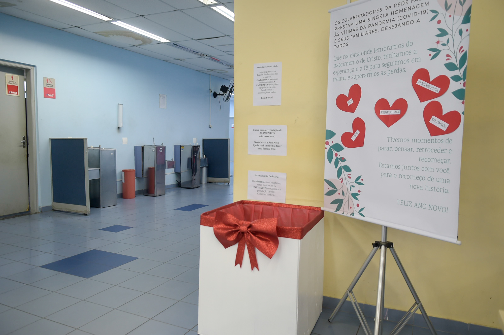

Conexão Solidária
Unimos doadores e instituições, garantindo que cada alimento chegue ao destino certo.
- Comunicação direta entre doadores e receptores
- Processo de doação simplificado

Conectamos doadores e instituições para combater a fome de forma simples e transparente.
Faça doações de forma rápida e segura para instituições cadastradas.
Conheça ONGs e entidades que recebem e distribuem os alimentos.
Acompanhe o destino das doações e veja o impacto que você ajuda a gerar.

A Nutribem conecta doadores e instituições de forma simples e transparente, garantindo que alimentos cheguem a quem mais precisa.
Nosso objetivo é reduzir o desperdício e promover a solidariedade através da tecnologia. Cada doação representa mais do que alimento; é um gesto de esperança e transformação social.
Pequenas doações que geram grandes impactos na vida de famílias.
Acompanhe para onde vai cada alimento doado.


Mais do que um site de doações, somos uma rede de solidariedade que conecta quem quer ajudar a quem mais precisa.
Unimos doadores e instituições, garantindo que cada alimento chegue ao destino certo.
Acompanhe como as doações estão transformando vidas.
Promovemos ações e campanhas educativas sobre a importância de combater o desperdício e ajudar quem precisa.
Utilizamos a tecnologia para tornar o processo de doação mais rápido, seguro e acessível para todos.
Junte-se a nós no combate à fome e no apoio a quem mais precisa. Cada doação conta para construir um futuro mais justo e solidário.
Programe sua doação ou agende uma coleta sem sair de casa — tudo online e rápido.
Agendar AgoraContamos com voluntários que garantem que cada doação chegue a quem mais precisa.
Conheça o TimeEntre em contato com nossa equipe e doe alimentos, roupas ou produtos de higiene. Cada gesto conta!
Acesse rapidamente os recursos para doar, solicitar apoio ou acompanhar suas contribuições.